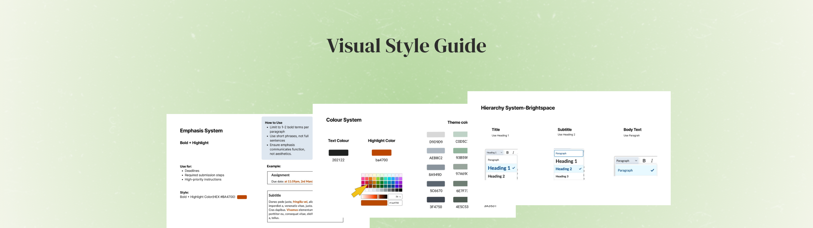
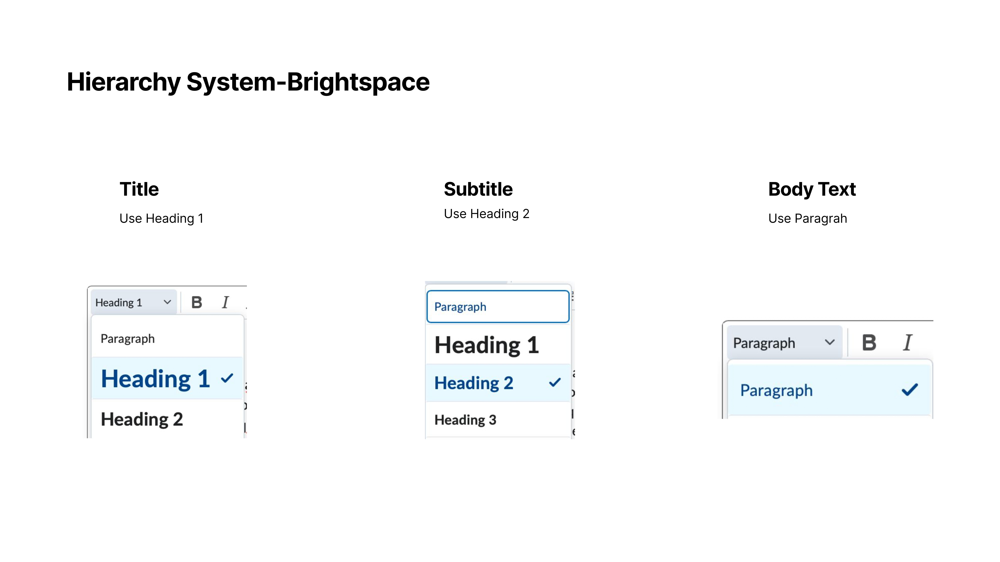
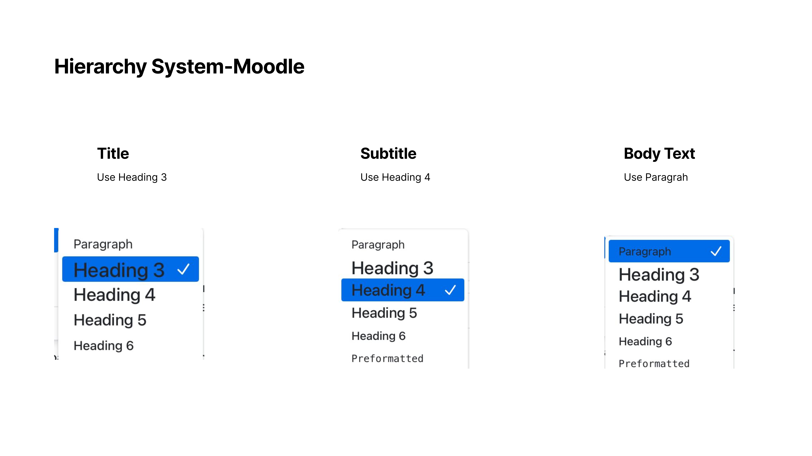
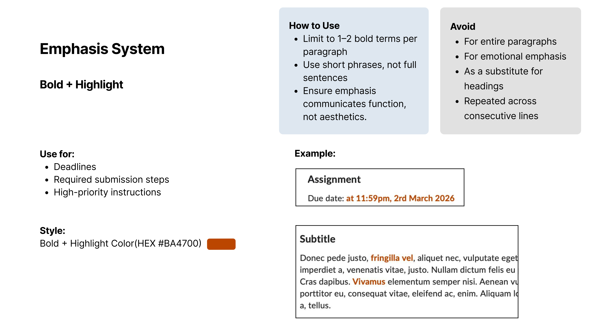
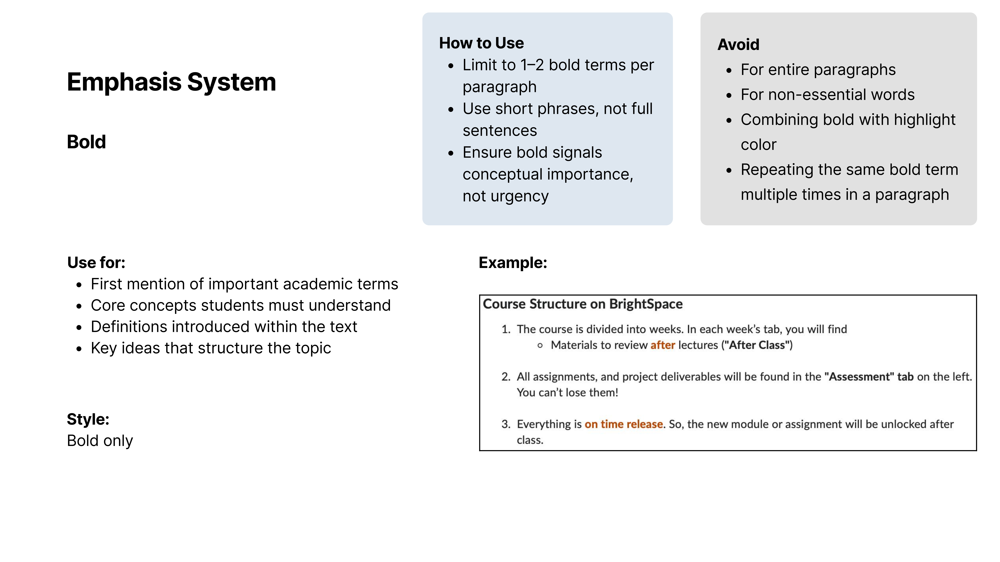
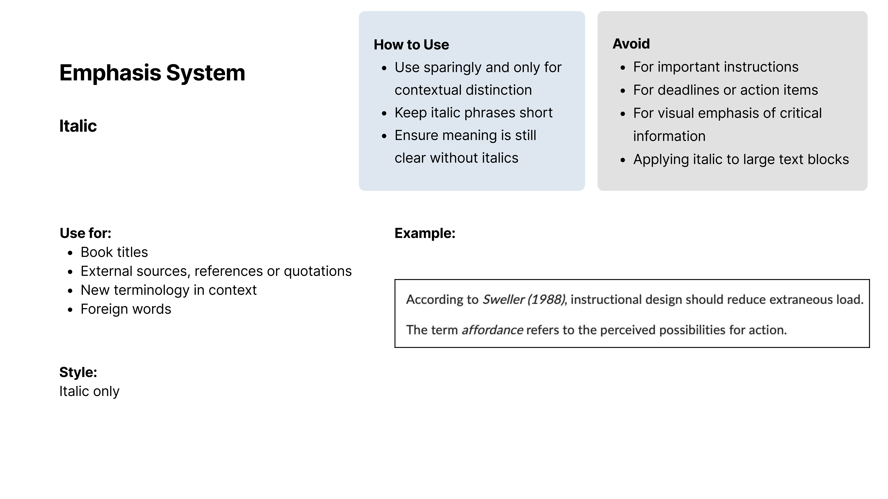
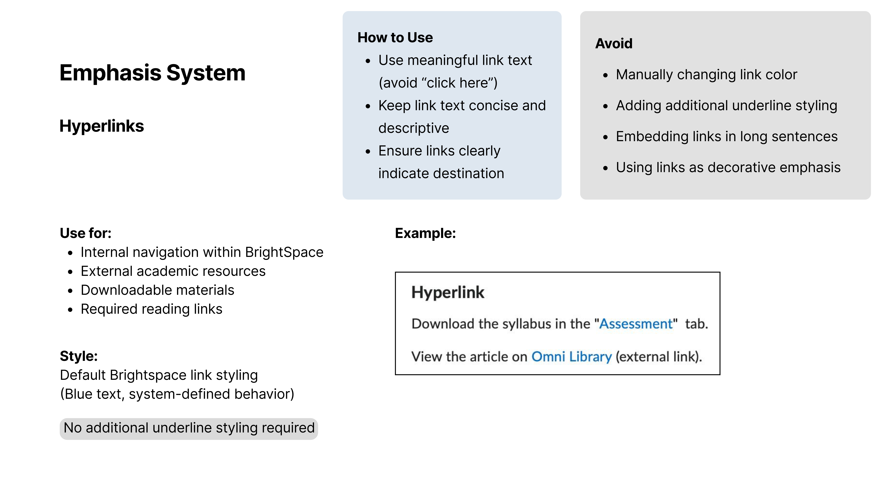
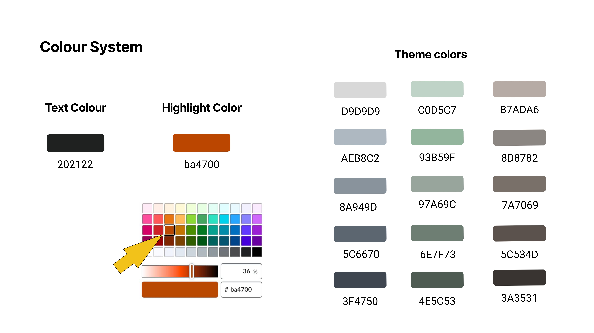

Establishing a Unified Visual Style Guide for LMS Platforms
Designing a scalable typography, emphasis, and color system for Brightspace and Moodle to improve instructional clarity and reduce cognitive load.

Overview
To ensure consistency across digital learning environments, I developed a comprehensive visual style guide. Grounded in instructional design principles (e.g., Sweller's cognitive load theory). This system standardizes hierarchy and emphasis to help students efficiently navigate deadlines, core concepts, and academic modules without visual clutter.
Platform-Specific Hierarchy
To ensure visual consistency across different Learning Management Systems, I created a tailored hierarchy system.
Structured using standard heading hierarchies (Heading 1 for titles, Heading 2 for subtitles).

Adapted to its specific native constraints by shifting the hierarchy down (Heading 3 for titles, Heading 4 for subtitles)

Intentional Emphasis System
To prevent visual fatigue, I established strict "Do's & Don'ts" rules linking text emphasis directly to instructional functions rather than aesthetics.
Strictly reserved for critical actions like deadlines, required submission steps, and high-priority instructions. Limited to 1-2 terms per paragraph

Used for first mentions of core concepts and definitions

Applied selectively for external references, book titles, and foreign words to reduce extraneous load

Must use descriptive text rather than vague phrases like "click here"

Accessible Colors & Data Mapping
I designed a high-contrast color palette to ensure readability and created a unified theme progression for course modules.
High-contrast primary text (#202122) paired with a singular, distinct highlight color (#BA4700) to draw attention to critical actions.

Implemented a thematic color progression system to visually map the student's journey from Module 0 (Introduction) and Module 1 (Datasets), through to Module 3 (Dashboarding)